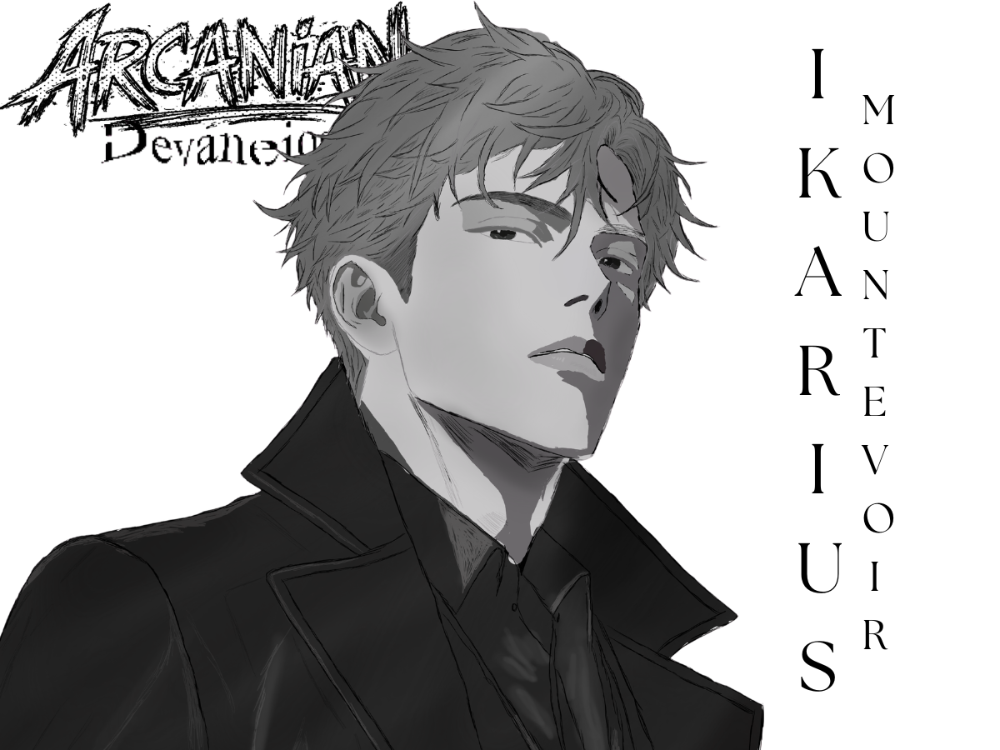
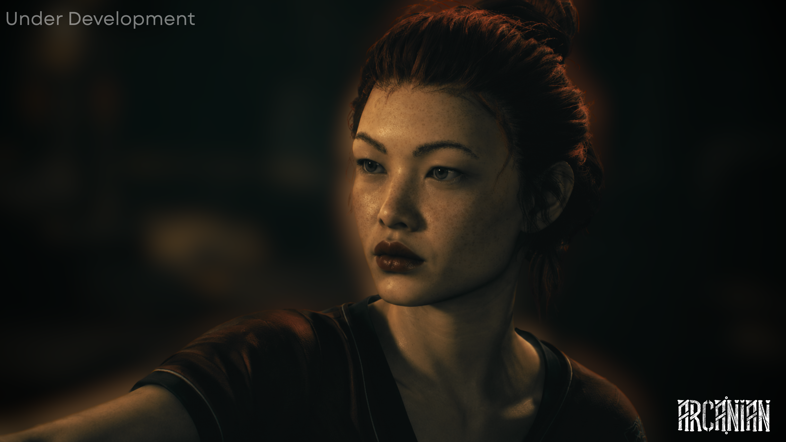
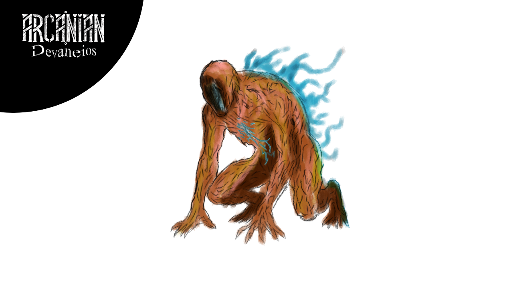
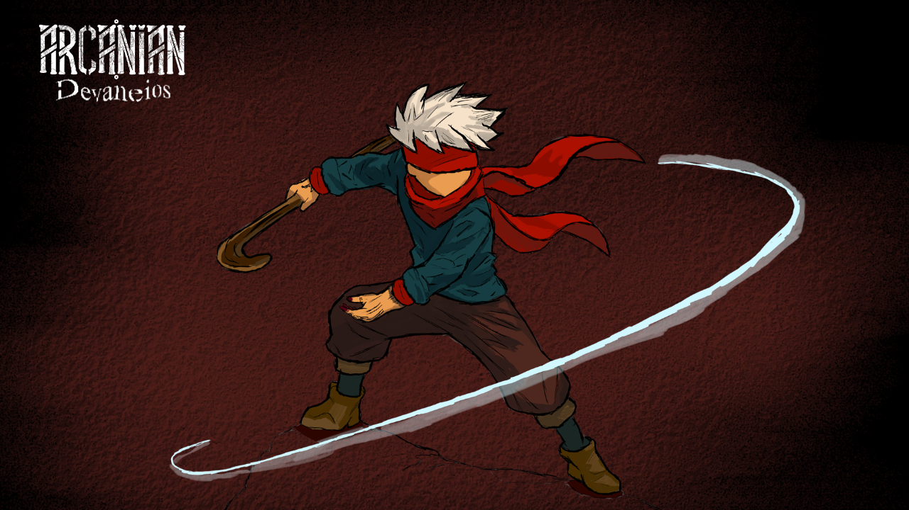

O momento chegou, e Arcanian Devaneios está sendo oficialmente anunciado.
Criado e escrito por Matheus Dantas, Arcanian: Devaneios marca o início oficial da expansão do universo de Arcanian.
Após 18 meses de planejamento, este anúncio marca o início oficial da expansão do universo de Arcanian. Mais do que um jogo, Devaneios representa uma nova fase narrativa, onde história, mecânica e percepção caminham juntas.
Antes da experiência jogável, a proposta é apresentar ao público as bases desse universo: seus conflitos, suas regras e, principalmente, suas interpretações.
O que estamos planejando para essa nova etapa?
O primeiro passo dessa nova fase será o lançamento do livro "Arcanian: Devaneios", previsto para o dia 21 de julho de 2026.
Este material funciona apenas como peça fundamental para compreender os eventos que moldam o jogo. Ele estabelece o tom psicológico e apresenta os principais conflitos que serão explorados na experiência interativa.

Ikarius Mountevoir
"Esse tal de Ikarius se esconde atrás do nome Mountevoir como se isso significasse alguma coisa. Mas no fim das contas, título nenhum compensa ignorância. Se ele fosse metade do que finge ser… já teria descoberto quem matou o próprio melhor amigo."
Após anos tentando se afastar do legado de sua família, Ikarius Mountevoir leva uma vida comum como investigador na cidade de Bayrule. Mas tudo muda quando descobre que a morte de seu pai talvez não tenha sido o caso encerrado que todos acreditavam.
Enquanto tenta encontrar respostas, uma série de desaparecimentos começa a chamar sua atenção. Pessoas desaparecem sem deixar rastros, testemunhos se contradizem e acontecimentos cada vez mais estranhos passam a surgir pelo caminho.
Sem conseguir ignorar as ligações entre os casos, Ikarius acaba se unindo aos Arnins, um grupo encarregado de lidar com ameaças que fogem da compreensão comum. O que parecia ser apenas uma investigação logo se transforma em algo muito maior, levando-o a enfrentar segredos enterrados há anos e verdades que deveriam ter permanecido esquecidas.
Agora falando do jogo...
O desenvolvimento terá início no dia 28, com foco inicial na construção das mecânicas centrais. A proposta é validar o núcleo da experiência o mais cedo possível, garantindo que cada sistema contribua diretamente para a sensação de tensão e incerteza.

Notas do Criador
Estamos nos esforçando para melhorar a qualidade gráfica e artística do projeto. Este ainda NÃO é o resultado finalizado, tampouco o desejado. Novos estilos de arte serão divulgados mais adiante.
Estamos desenvolvendo o nosso jogo para as seguintes plataformas:
- Windows / Linux
- Xbox Series S/X
Funcionalidades
Estrutura de jogo
Devaneios foi projetado para oferecer duas abordagens distintas: experiência solo e cooperativa. Cada uma delas altera profundamente a forma como o jogador interage com o mundo e toma decisões.
Single-player e Co-op
No modo solo, o jogador assume total responsabilidade pelas consequências, recebendo recompensas ampliadas. Já no modo cooperativo, a dinâmica entre dois jogadores permite estratégias mais seguras, mas nunca totalmente confiáveis.
Em ambos os casos, o jogo não busca equilíbrio tradicional, mas sim tensão constante.

Experimento 707
"Joseph Kyllan, ele tinha 53 anos quando caiu naquele grande caldeirão. Não tivemos escolha a não ser terminar o serviço. Mas, algo estranho aconteceu. O seu corpo tornou-se mais... resistente? Não posso afirmar. Mas, boas notícias cara! Você é o passo para a evolução da raça humana. Desta geração, e de muitas outras.""
Mini... jogos?

Você não está sozinho
"Mark... acorde!"
Afim de melhorar a experiência da comunidade, mini-jogos com histórias exclusivas estarão presentes durante a campanha!
Estamos trabalhando efetivamente para contar uma história de maneira diferente, mas que abrace diferentes públicos.
Nível de dificuldade
Os modos de dificuldade foram pensados para alterar não apenas números, mas o comportamento do jogo como um todo.
Papai te segura
- Foco em exploração e narrativa
- Sem penalidade de perda de itens
- Menor agressividade dos inimigos
Veterano
- Experiência padrão do jogo
- Combate imprevisível
- Perda de recursos ao falhar
Honrado
- Progressão permanente perdida ao morrer
- Alta letalidade
- Erro mínimo permitido
Também será possível configurar experiências personalizadas.
Escolha seu destino
Não existe um único caminho. Cada decisão altera não apenas o rumo da investigação,
mas a forma como o próprio mundo responde ao jogador.
Com 12 finais distintos, o jogo não informa consequências com antecedência —
exigindo interpretação, risco e aceitação de erro.
Algumas escolhas são irreversíveis. Outras só mostram seu impacto muito tempo depois.
Continue por sua conta.
Ou pare enquanto ainda entende o que está acontecendo.
Previsão de lançamento
A primeira versão jogável está prevista para fevereiro de 2027.
Esse acesso inicial será limitado, focado em validação técnica, coleta de feedback
e refinamento da experiência base.
O lançamento completo dependerá da estabilidade dos sistemas e da resposta da comunidade.
Preços
- E-Book: R$14,99 — incluído numa assinatura Amazon Unlimited
- Capa normal: R$34,99
- Capa dura: R$54,99
Os valores podem evoluir conforme o conteúdo for expandido.

Você não está sozinho
"Mark... acorde!"
Afim de melhorar a experiência da comunidade, mini-jogos com histórias exclusivas estarão presentes durante a campanha! Estamos trabalhando efetivamente para contar uma história de maneira diferente, mas que abrace diferentes públicos.
Nível de dificuldade
Os modos de dificuldade foram pensados para alterar não apenas números, mas o comportamento do jogo como um todo.
Papai te segura
- Foco em exploração e narrativa
- Sem penalidade de perda de itens
- Menor agressividade dos inimigos
Veterano
- Experiência padrão do jogo
- Combate imprevisível
- Perda de recursos ao falhar
Honrado
- Progressão permanente perdida ao morrer
- Alta letalidade
- Erro mínimo permitido
Também será possível configurar experiências personalizadas.
Escolha seu destino
Não existe um único caminho. Cada decisão altera não apenas o rumo da investigação, mas a forma como o próprio mundo responde ao jogador.
Com 12 finais distintos, o jogo não informa consequências com antecedência — exigindo interpretação, risco e aceitação de erro.
Algumas escolhas são irreversíveis. Outras só mostram seu impacto muito tempo depois.
Ou pare enquanto ainda entende o que está acontecendo.
Previsão de lançamento
A primeira versão jogável está prevista para fevereiro de 2027.
Esse acesso inicial será limitado, focado em validação técnica, coleta de feedback e refinamento da experiência base.
O lançamento completo dependerá da estabilidade dos sistemas e da resposta da comunidade.
Preços
- E-Book: R$14,99 — incluído numa assinatura Amazon Unlimited
- Capa normal: R$34,99
- Capa dura: R$54,99
Os valores podem evoluir conforme o conteúdo for expandido.